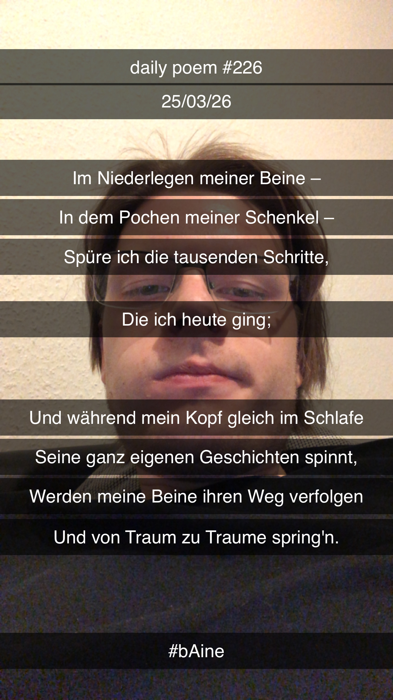

Traum der müden Beine
[226]Im Niederlegen meiner Beine –
In dem Pochen meiner Schenkel –
Spüre ich die tausenden Schritte,
Die ich heute ging;
Und während mein Kopf gleich im Schlafe
Seine ganz eigenen Geschichten spinnt,
Werden meine Beine ihren Weg verfolgen
Und von Traum zu Traume spring'n.
